Atardecer y estrellas
Recogida en el sur, puesta de sol sobre el mar de nubes y telescopios en el Llano de Ucanca. Llévense abrigo.
69 €adulto · ejemplo
Ver la excursiónTwelve ways to show a client's photos, with ideas from Motion Primitives, daisyUI, Aceternity, Cult UI, Skiper UI and Watermelon UI, rebuilt in plain CSS and about 6 KB of our own script. Nothing stays hidden if a script fails, and motion switches off for people who ask their phone for less.
Scroll through on your phone, then send me the codes worth keeping.
P3, P5 and P8 follow your finger as you scroll. They run in Chrome, Edge, Samsung Internet and Safari 26 or newer; older browsers show the finished state, with nothing missing. P2's notes open beside the dot where the browser has anchor positioning, and in the middle of the screen elsewhere. The businesses are the fictional showroom ones; every price, review and claim is an example.
Two photos stacked; drag the line, or use the arrow keys, to wipe between them. For renovations, cleaning and detailing, hair and nails. Demo pair: one photo, graded two ways. In a real build this is the client's own before and after.
Casa Tea · La Orotava

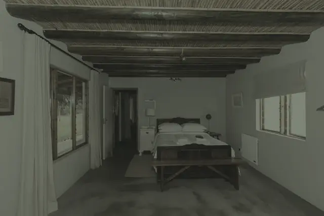
AntesDespuésNumbered dots on a photo; tap one and a small note opens right next to it. Escape or a tap outside closes it. For a patio, a room, a dish or a finished job, where the details sell it.
Casa Tea · La Orotava
Toquen los puntos: cada uno cuenta un detalle de la casa.

Farol de la galeríaDe forja, sobre la entrada. Se enciende al caer la tarde.
Balcón de teaLa tea es el corazón resinoso del pino canario. La familia restauró cada balaustre.
HelechosCuelgan de la galería y dan sombra al patio todo el año.
Patio canarioTodas las habitaciones dan aquí. El desayuno se sirve en el patio, de 8:00 a 10:30 (ejemplo).
The photo stays put while the steps scroll past, and it fades to each step's picture. On a phone it sits pinned above the text. For a treatment ritual, a stay, a tour day or how a job runs.
Lúnula Studio · Los Cristianos
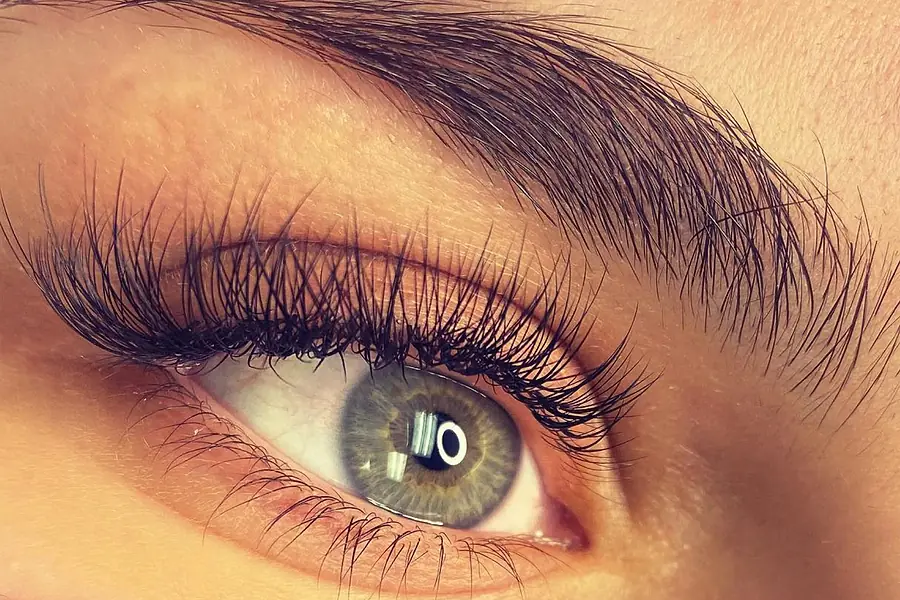
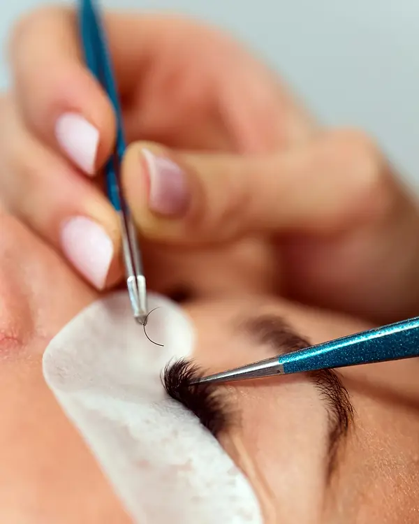


Paso 1 · 10 min
Miramos tu pestaña y tu uña natural y decidimos juntas qué te va.
Gratis
Paso 2 · 90 min
Una extensión en cada pestaña, con pinzas y sin prisa. Puedes dormir.
65 €ejemplo
Paso 3 · 30 min
Peinadas hacia arriba y fijadas, para que te duren semanas.
35 €ejemplo
Paso 4 · 60 min
Construcción en gel y sales con las manos listas para la boda.
45 €ejemplo
A wall of small photos and words on a tilted plane, the columns drifting slowly in opposite directions. It stops after about a minute, pauses on touch or hover, and has a pause button. For a carta, a portfolio or a "this week" block.
Tasca Picón · Puerto de la Cruz
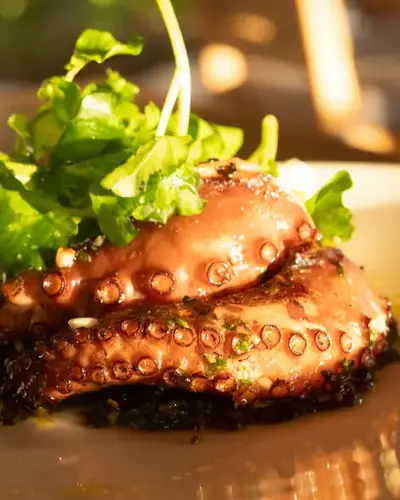
Mojo rojo

Vino de la isladesde 3 € · ejemplo
Papas arrugadas
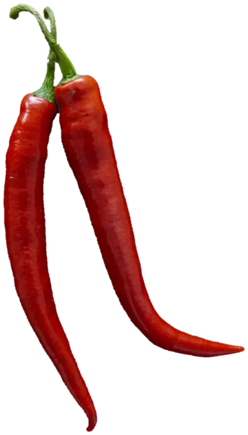
Pulpo16 € · ejemplo
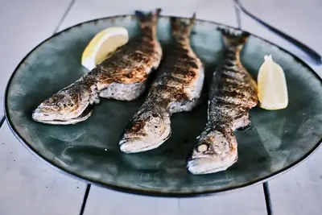
Mojo verde
Mar–dom19:00–23:30 · ejemplo
Lapas
Queso asado
The photo starts as a two-ink dot pattern, like a risograph print, and the clean photo opens out of it as you scroll. Without scroll timelines you see both halves side by side. For barbers, bars, trades and editorial looks.
Fase Neutro · Adeje
Photos cut into wobbly, hand-drawn shapes, each one different, with a loose pencil line around it. No motion; on a desktop the photo leans in a touch under the cursor. For bakeries, cafés, crafts and kids' activities.
Café Alisio · El Médano

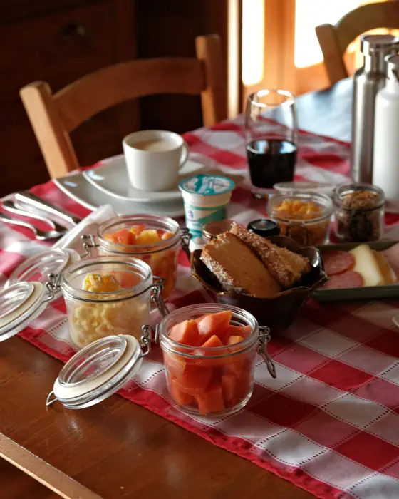

A row of photo panels; the chosen one opens wide with its caption. Tap on a phone (where it stacks), arrow keys on a keyboard, hover on a desktop. For services, rooms or tours.
Lúnula Studio · servicios
A photo wall whose columns slide at different speeds, some up and some down, as you scroll. Two columns on a phone, three on a desktop. For restaurants, spas and rural houses with plenty of good photos.
Casa Tea · La Orotava
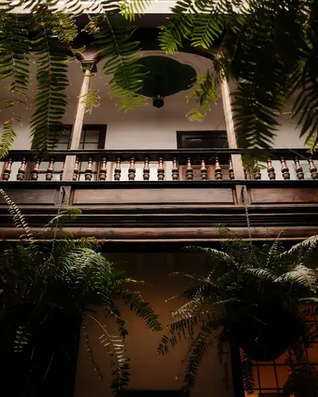
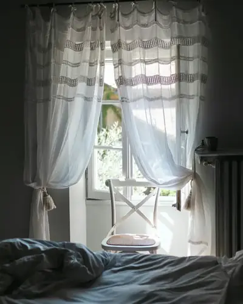
Cinco habitaciones, una familia.Casa del siglo XVIII · ejemplo
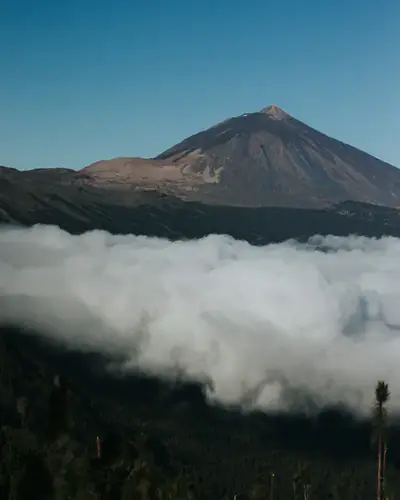
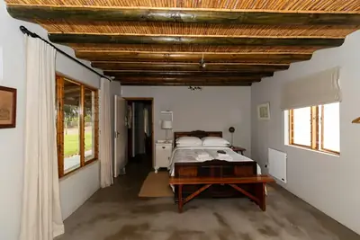
Desayuno en el patio.08:00–10:30 · ejemplo
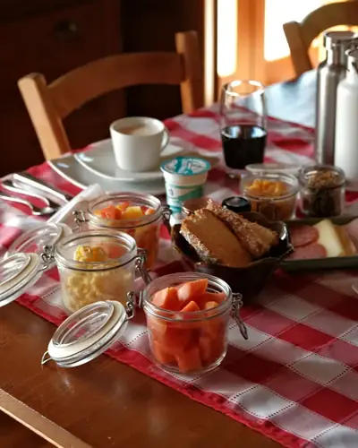
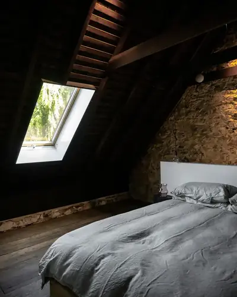
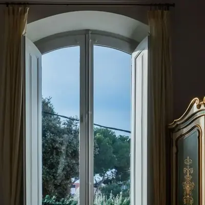
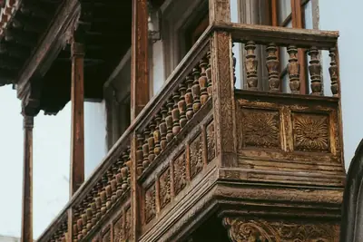
El casco viejo, en la puerta.La Orotava · ejemplo
Datos de ejemplo
Photos on a 3D drum; drag it sideways and it spins on with a little momentum, then settles on a photo. Arrow buttons too. With less motion asked for, it is a normal swipe row. For tours, rooms and portfolios.
Cielo Ucanca · Atardecer y estrellas

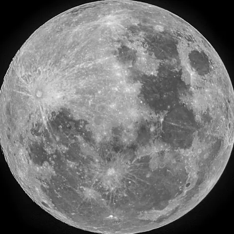
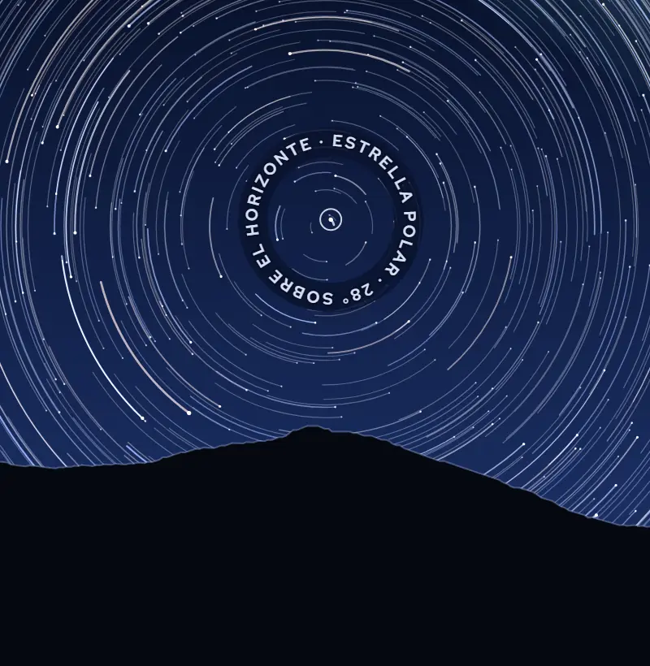
A fanned stack of cards; swipe the top one sideways and it goes to the back. Buttons do the same. Used here for reviews, but it works for photos too. Without JavaScript it is a plain list.
Tasca Picón · reseñas de ejemplo
Desliza la tarjeta de arriba hacia un lado.
Reseña 1 de 5
“Las papas con los dos mojos. El verde me lo llevaría a casa.”
“Pulpo tierno, vino de Tacoronte y nadie con prisa.”
“Un viernes ruidoso, como tiene que ser. Volveremos.”
“Fuimos sin reserva, dos en la barra, y en cinco minutos teníamos sitio.”
“El queso asado con miel de palma. No digo más.”
Thumbnails around a circle; tap one and it flies into the centre, large, with its caption. Where the browser has no View Transitions it simply swaps. For services, a team, rooms or dishes.
Lúnula Studio · toca una foto
Construcción completa en gel, forma y largo a tu gusto.
45 € · ejemplo
Move the cursor across the photo and it flips through four shots, like scrubbing a video. On a phone, tap the left or right part of the photo to see another; the dots show there are more. For rooms, products, portfolios and tours.
Recogida en el sur, puesta de sol sobre el mar de nubes y telescopios en el Llano de Ucanca. Llévense abrigo.
69 €adulto · ejemplo
Ver la excursiónCielo Ucanca · la tarde, en cuatro fotos
Horarios de ejemplo